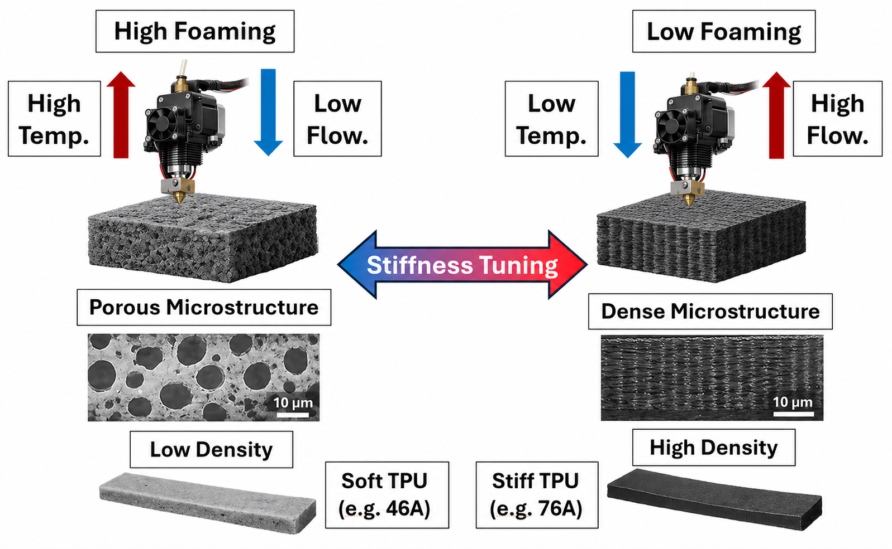
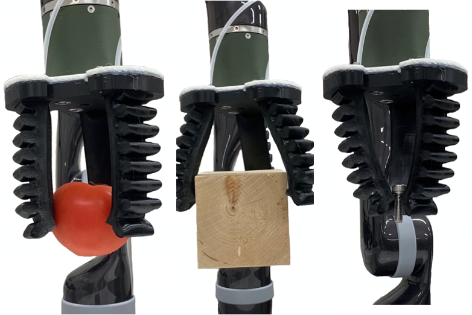
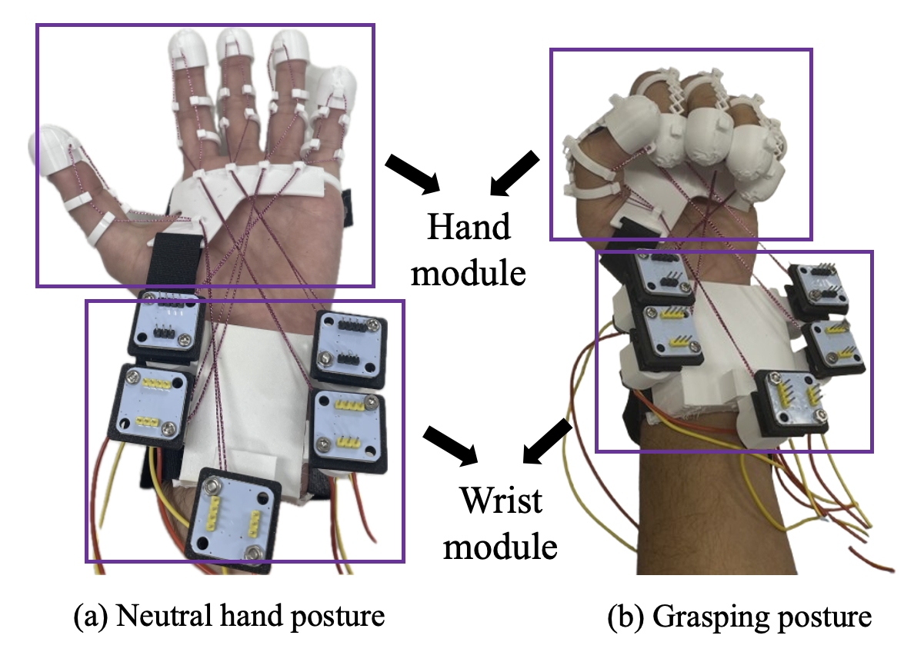
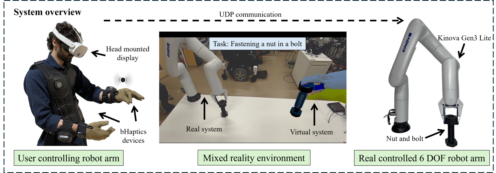

A
Additive manufacturing for soft robotics
Using FDM 3D printing and highly flexible materials to fabricate customizable, monolithic soft robots and grippers.
Related publicationsM.S. Student · Soft Robotics
I develop 3D-printed soft robots inspired by nature, with new actuation and intelligence for more adaptable robotic systems.
M.S. student in the Graduate School of Engineering at Kyoto University of Advanced Science. Researcher at Nisar Lab.

Nisar Lab · Kyoto, Japan
01
I am a first-year master’s student in Mechanical and Electrical Systems Engineering at Kyoto University of Advanced Science and a member of Nisar Lab.
I received my B.S. degree in Mechanical and Electrical Systems Engineering from Kyoto University of Advanced Science in 2025. My work focuses on fabricating soft robots through additive manufacturing, developing bio-inspired robotic systems, and exploring actuation and intelligent control methods that improve their functionality, adaptability, and performance.
02
Research spanning fabrication, actuation, and intelligent soft robotic systems.
A
Using FDM 3D printing and highly flexible materials to fabricate customizable, monolithic soft robots and grippers.
Related publicationsB
Translating principles from biological movement and adaptation into compliant robotic mechanisms.
Related publicationsC
Exploring novel actuation methods and ML/AI approaches to improve soft robots’ control, functionality, and performance.
Related publications03

IEEE Access, vol. 14, pp. 80174–80183
Local stiffness is programmed during a single FDM print to create a monolithic soft crawler with compliant and rigid regions where they are most effective. The optimized design moves faster and more efficiently while retaining untethered turning and slope-climbing capability.
Figure 1 of 3: Foamed TPU stiffness tuning
Soft crawling robots rely on localized anchoring and efficient force transmission to generate net forward motion. However, their performance is often limited by fabrication methods that produce uniformly soft bodies, which limit the ability to introduce localized stiffness required for efficient locomotion. This paper presents a monolithic spatial stiffness tuning approach for soft robots enabled by FDM 3D printing of actively foaming Thermoplastic Polyurethane (TPU), where stiffness is locally programmed by controlling extrusion temperature and flow ratio without multi-material printing or additional fabrication time. To demonstrate this concept, we design and fabricate a novel 3D-printable electromagnetically actuated soft crawling robot that integrates electromagnets and permanent magnets within a TPU body and uses a directional sawtooth friction layer for controlled directional crawling. Four prototypes with different Shore hardness distributions across the body and friction layer were fabricated, ranging from fully soft to fully stiff configurations. Experimental results show that our proposed method can significantly improve locomotion speed, resulting in around 200% increase in maximum speed (130.29 mm/s, 1.3029 Bl/s) compared to a fully soft design (43.29 mm/s, 0.4329 Bl/s), along with improved energetic efficiency (64% reduction in energy per distance). The optimized design was fabricated in an untethered configuration and evaluated experimentally, achieving high-speed locomotion (72.727 mm/s, 0.727 Bl/s), full 360° rotation in around 23 s, and slope climbing up to 15°. Finally, the proposed design is quantitatively compared with prior soft crawling robots, highlighting the performance benefits of monolithic spatial stiffness tuning using foamed TPU in soft robots.

IEEE Access, vol. 13, pp. 210465–210473
This work establishes material models and practical fabrication methods for highly flexible 60A and 70A TPU, then validates them through high-fidelity FDM-printed pneumatic grippers. The resulting grippers combine rapid fabrication with strong grasping and large deformation.
Media 1 of 3: Soft finger actuation

Fused Deposition Modeling (FDM) 3D printing with Thermoplastic Polyurethane (TPU) has recently been used to fabricate soft robotic actuators and grippers, offering an alternative to traditional silicone casting, which is time-consuming and involves complex manufacturing steps. However, 3D printing soft robotic actuators and grippers using highly flexible TPU (Shore hardness of 60A and 70A) remains unexplored. Although 60A and 70A TPUs are expected to provide excellent features for soft robots, designing and simulating soft robots using these TPU grades requires information about their best-fitting hyperelastic model, parameters, and material properties, which are hitherto unknown. Therefore, we characterize the 60A and 70A TPU behavior using uniaxial tensile tests and identify the best-fitting hyperelastic model with its appropriate parameters. We then demonstrated the feasibility of using these materials by 3D printing high-fidelity soft grippers using 60A and 70A TPU. Compared to a traditional silicone-based soft gripper of a similar size and shape, the proposed 3D printed TPU soft gripper can grasp objects over five times heavier and achieve more than twice the bending angle, while significantly reducing fabrication time and complexity. We also compared the bending angles of 60A and 70A TPU with 85A TPU soft fingers to demonstrate the importance of low-Shore-hardness materials. Furthermore, we compared the experimentally measured bending behavior of the TPU soft fingers with simulation results using the obtained hyperelastic parameters and found that they closely match the experimental results.
Abstract from the published IEEE Access article .

Conference paper
31st International Symposium on Artificial Life and Robotics (AROB 31st 2026)
This work presents a compact, 3D-printable tendon-driven soft robotic glove for home-based hand rehabilitation. Relocating all five actuators to a wrist-mounted unit reduces distal hand mass while preserving effective finger assistance, comfort, and wearable compliance.
Figure 1 of 2: Glove modules and tendon-drive motors
Hand motor impairments resulting from neurological and musculoskeletal conditions often require long-term, repetitive rehabilitation to restore functional movement. Conventional therapy sessions require frequent clinical visits and bulky devices, eliminating the accessibility of home-based therapy. Therefore, this paper presents a 3D printable compact tendon-driven soft wearable robotic glove fabricated from thermoplastic polyurethane (TPU) intended for home-based rehabilitation. To minimize distal mass and improve comfort, all actuators are integrated into a wrist-mounted unit, reducing the load on the hand while maintaining effective finger actuation. Unlike many existing designs that rely on distributed actuators or sensors placed on the hand, the proposed glove prioritizes mass relocation and material compliance to enhance wearability. The soft robotic glove prototype weighs 184 g in the upper limb, resulting in the lowest weight among previous works of five-finger actuation gloves. Experiments were conducted with seven healthy subjects who were instructed to keep their hands stationary throughout the trials and the results showed generally positive subjective evaluations in terms of comfort, grasping motion quality, perceived assistance, and perceived safety.
Conference paper
31st International Symposium on Artificial Life and Robotics (AROB 31st 2026)

Conference paper
Annual Conference of the Robotics Society of Japan (RSJ 2025)
This mixed-reality training platform combines a vibrotactile glove and suit with a digital twin and physical robot arm for fine telemanipulation practice. Real-time hand tracking mirrors the user’s actions on the robot while targeted tactile cues support positioning, contact, and alignment.
Figure 1 of 2: Mixed-reality system overview
We present a vibrotactile haptic-enabled mixed reality training platform designed to accelerate skill acquisition for fine telemanipulation tasks. The system utilizes a wearable vibrotactile glove and suit, providing haptic feedback and assistance for positioning, touch interaction, and alignment, specifically targeting the fingertips, wrist, and chest regions. A digital twin of a six-degree-of-freedom robotic arm is controlled within the mixed reality environment by tracking the user’s hand position and actions, which are mirrored in real time by the physical robotic counterpart. User experiments involving a remote assembly task are conducted to evaluate the system’s effectiveness with and without tactile feedback.
Student Innovation Challenge · Poster
IEEE World Haptics Conference (WHC 2025)
.png)
Conference paper
30th International Symposium on Artificial Life and Robotics (AROB 30th 2025)
This study characterizes highly flexible, commercially available TPU filaments for reliable finite element simulation of 3D-printed soft robots. Tensile and compression data are used to calibrate and validate hyperelastic material models for design and analysis in CAD-based workflows.
Figure 1 of 2: Simulation and material-model comparison
Thermoplastic Polyurethane (TPU) with Fused Deposition Modeling (FDM) has gained significant attention in soft robotics due to the ability to fabricate more complex geometries relative to other fabrication methods. Despite their potential, there is a lack of sufficient available hyperelastic material data to be able to accurately simulate the softest commercially available TPU filaments. This research systematically investigates their stress-strain characteristics through tensile and compression tests, providing empirical data to calibrate hyperelastic models, including Mooney-Rivlin and Ogden formulations. Finite element analysis (FEA) simulations validate these models, enabling optimized designs for 3D-printed soft robotic components. By bridging experimental characterization and computational modeling, this research addresses critical gaps and empowers researchers to design, optimize, and analyze novel 3D-printable soft robotic systems using CAD tools.
Conference paper
30th International Symposium on Artificial Life and Robotics (AROB 30th 2025)
Conference paper
Annual Conference of the Robotics Society of Japan (RSJ 2024)
Conference paper
Annual Conference of the Robotics Society of Japan (RSJ 2024)
Workshop poster
IEEE/RSJ International Conference on Intelligent Robots and Systems (IROS 2024), Workshop on 3D/4D Printing and Smart Materials for Sustainable Soft Robotics
04
Have a question or an idea?
I welcome conversations about collaboration, speaking, student opportunities, and related research.
khalidmeitani@outlook.com.png)